Project Overview
The workflow produced 80 final antibody design candidates and 160 heavy/light chain sequence records. The strongest candidate in this batch is samples_design_4_dldesign_3_best, with a composite affinity score of 15,360.5.
This page summarizes computational outputs only. It is not experimental validation, clinical evidence, or a safety assessment.
Key Result
The ranking shows a pronounced lead candidate and a smaller backup tier. The top design combines high hydrophobic-contact count, estimated polar/electrostatic contacts, and a relatively large interface residue count.
- Composite score range: 10 to 15,360.5
- Median composite score: 1,103.5
- Mean composite score: 1,987.6
- Heavy-chain median similarity vs Zanidatamab: 51.7%
- Light-chain median similarity vs Zanidatamab: 57.0%
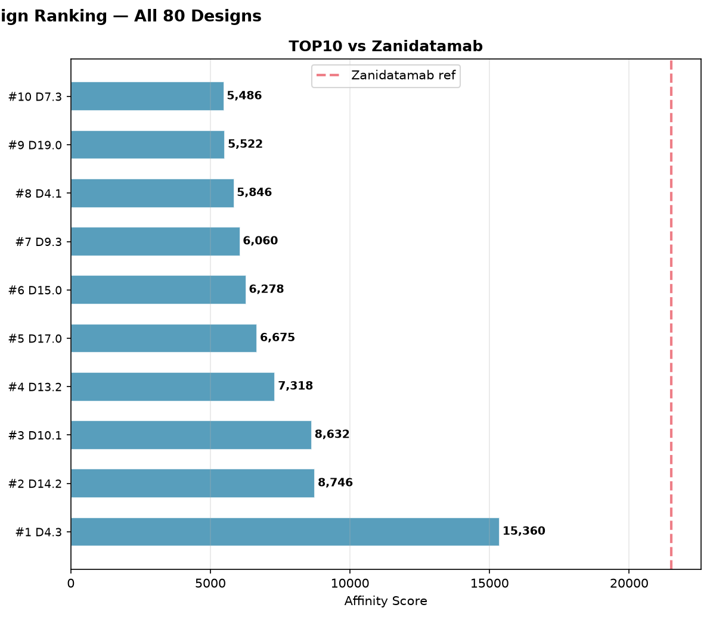
Top 10 Candidates
| Rank | Candidate | Score | Hydrophobic | H-bond | Salt bridge | Interface residues |
|---|---|---|---|---|---|---|
| 1 | samples_design_4_dldesign_3_best | 15,360.5 | 7,424 | 146 | 258 | 71 |
| 2 | samples_design_14_dldesign_2_best | 8,746.5 | 3,654 | 50 | 1,331 | 65 |
| 3 | samples_design_10_dldesign_1_best | 8,632 | 3,627 | 138 | 1,131 | 80 |
| 4 | samples_design_13_dldesign_2_best | 7,318.5 | 3,569 | 56 | 67 | 59 |
| 5 | samples_design_17_dldesign_0_best | 6,675 | 2,864 | 51 | 830 | 81 |
| 6 | samples_design_15_dldesign_0_best | 6,277.5 | 2,919 | 24 | 372 | 63 |
| 7 | samples_design_9_dldesign_3_best | 6,060.5 | 2,641 | 41 | 681 | 72 |
| 8 | samples_design_4_dldesign_1_best | 5,846 | 2,778 | 3 | 256 | 59 |
| 9 | samples_design_19_dldesign_0_best | 5,522 | 2,390 | 106 | 555 | 56 |
| 10 | samples_design_7_dldesign_3_best | 5,485.5 | 2,295 | 93 | 717 | 78 |
Analysis Figures
The original multi-panel figures were split into readable subfigures for the web page and English report.
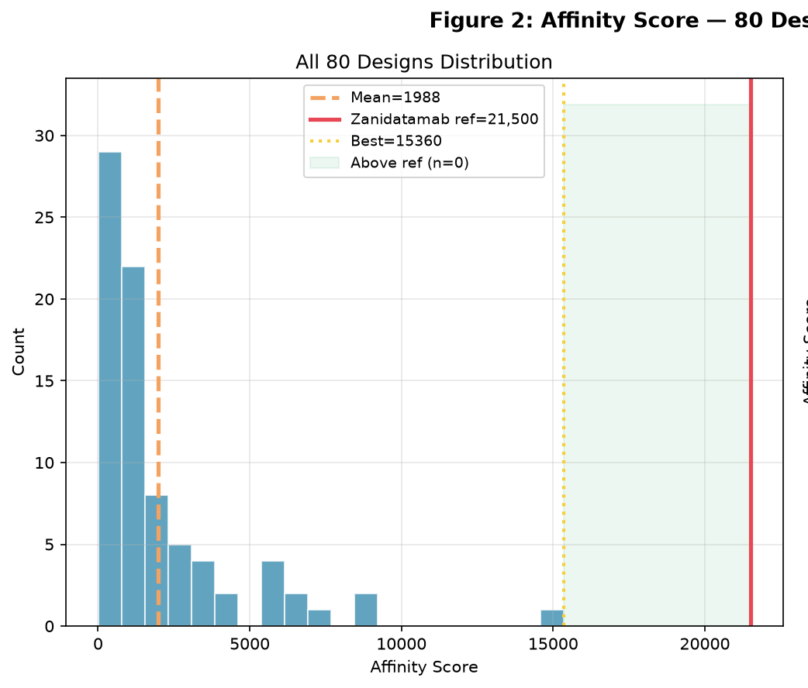
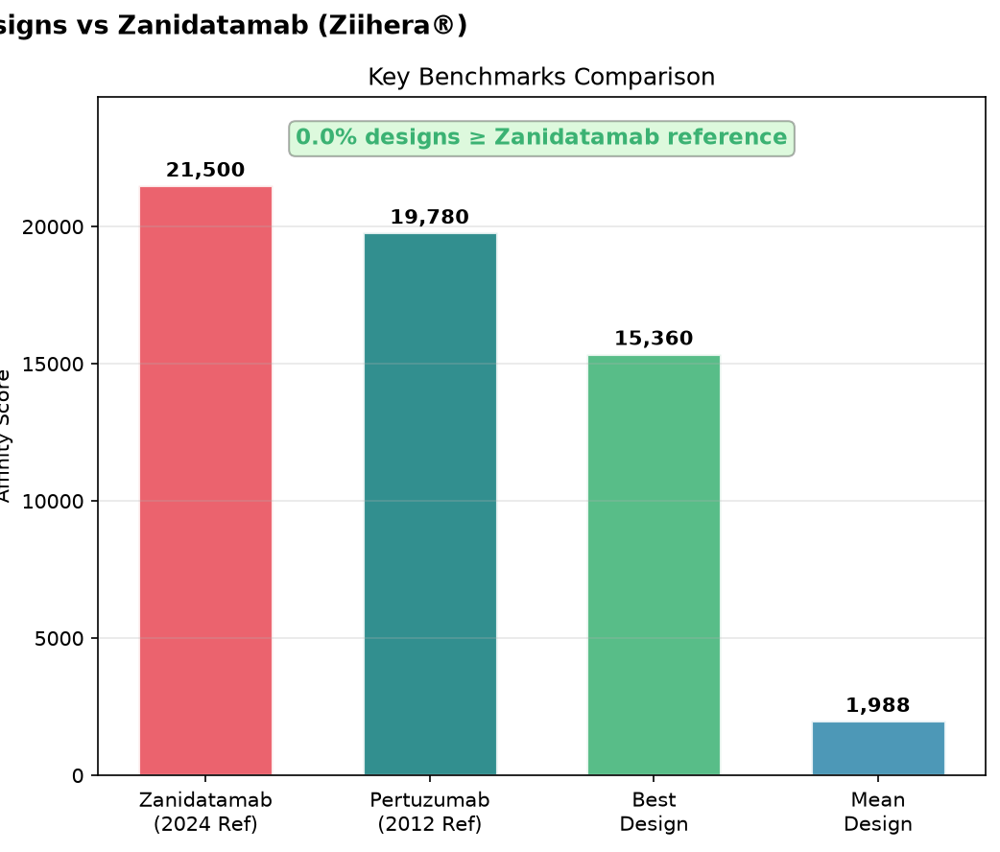
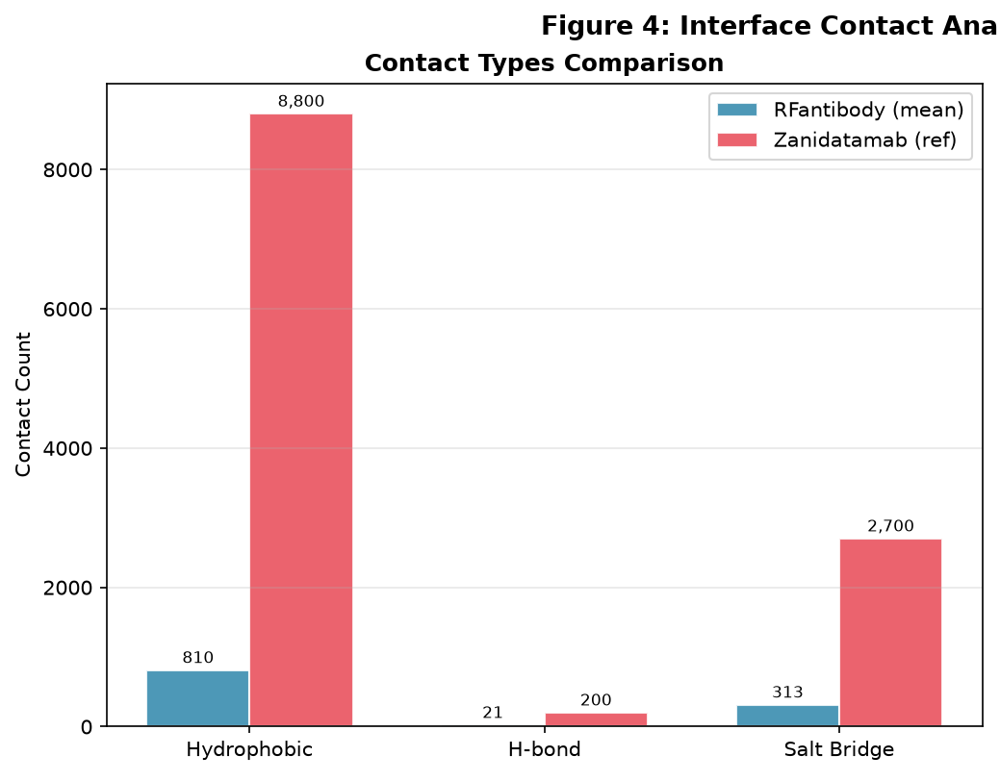
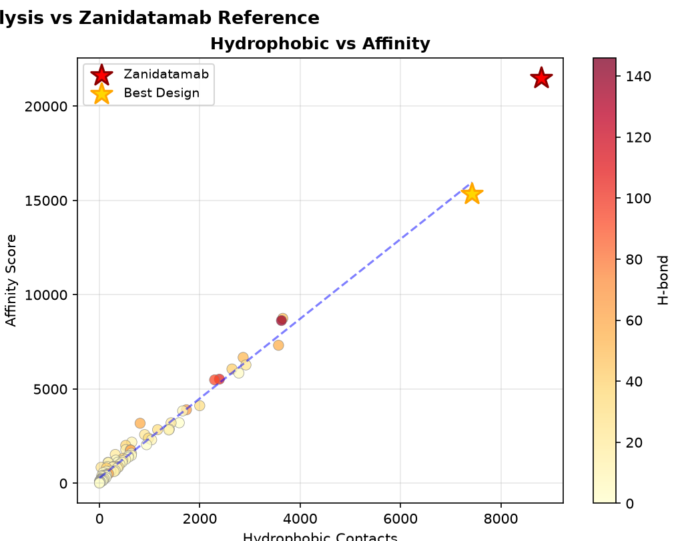
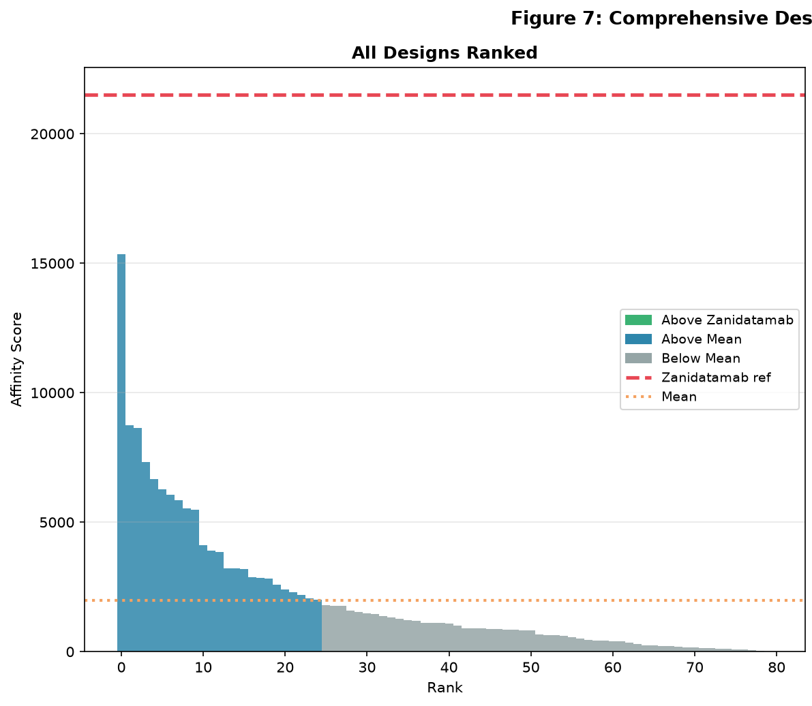
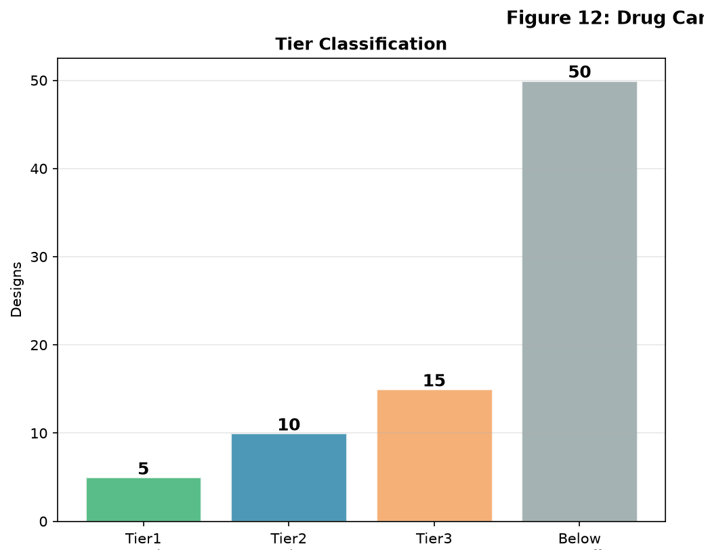
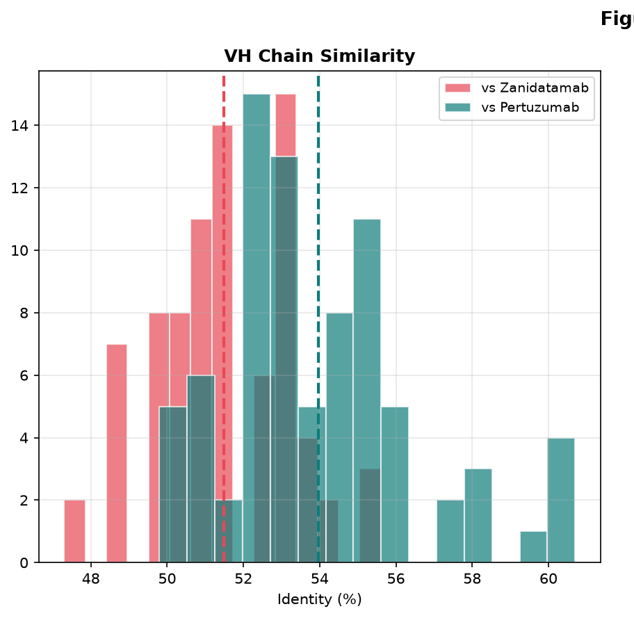
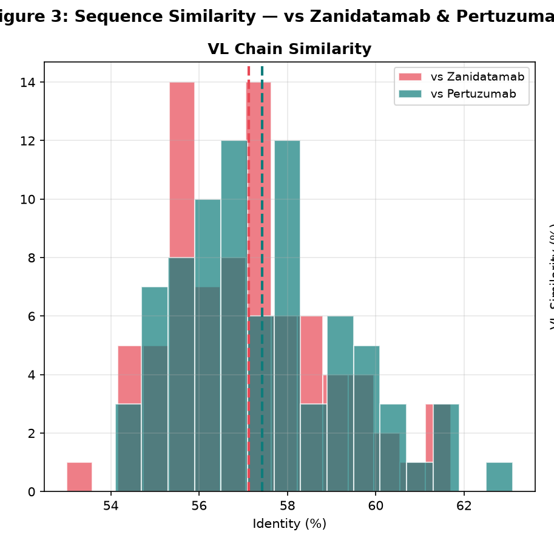
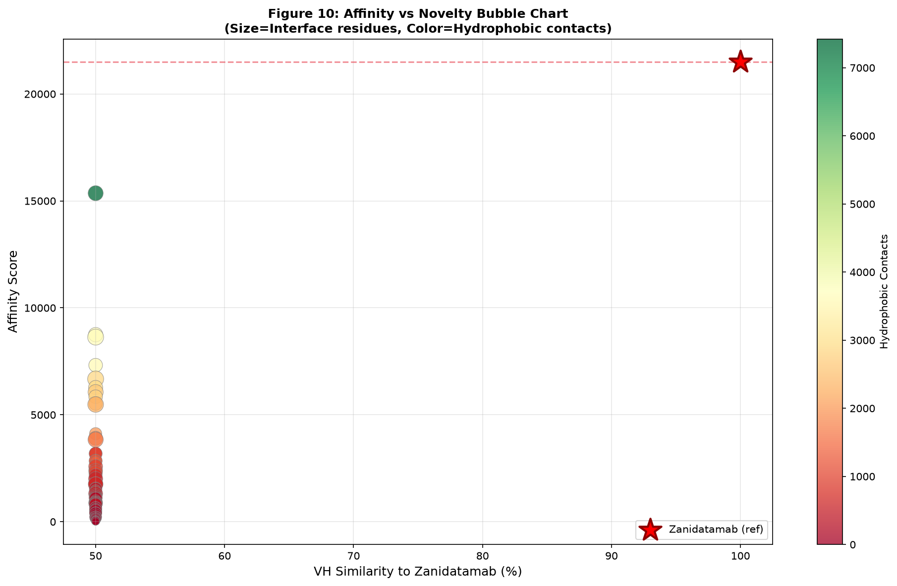
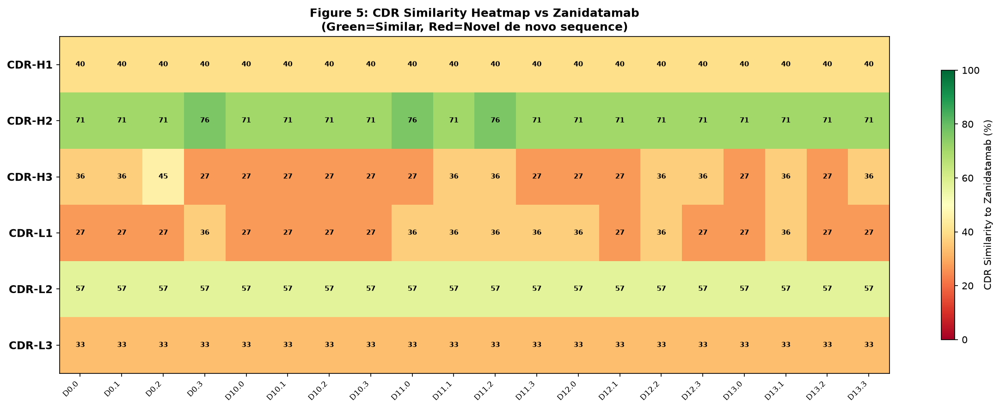
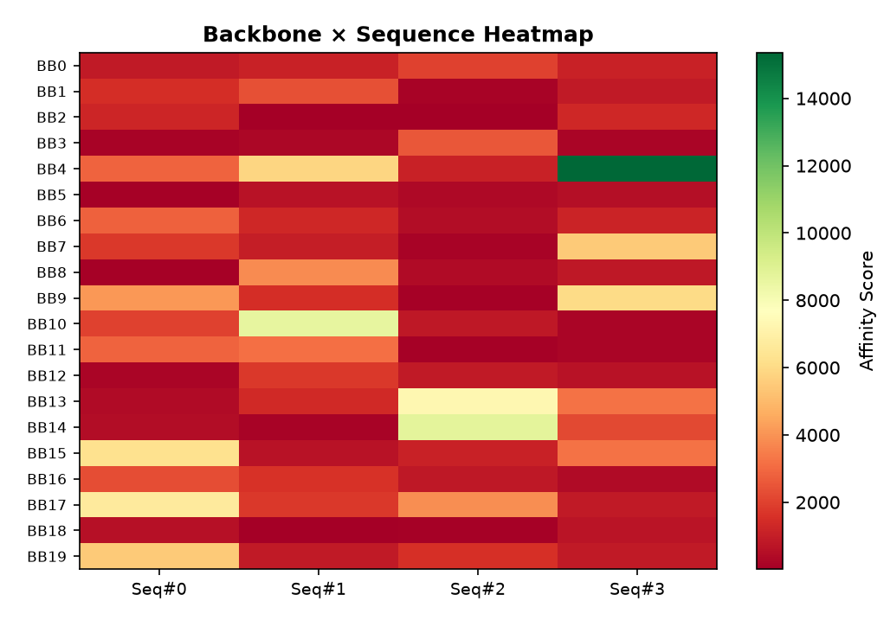
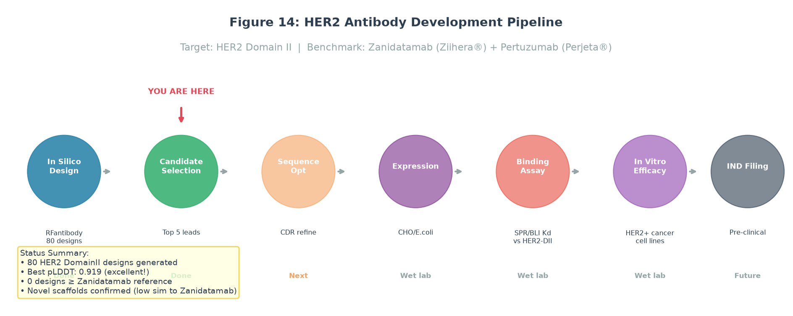
Recommended Next Steps
- Visually inspect top PDB models for interface geometry and CDR orientation.
- Select 3-5 non-redundant candidates for expression and binding assays.
- Measure binding using SPR, BLI, ELISA, or an equivalent method.
- Add early developability checks before any major optimization campaign.